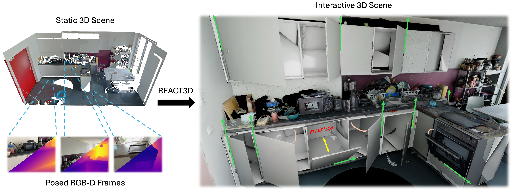
Interactive 3D scenes are increasingly vital for embodied intelligence, yet existing datasets remain limited due to the labor-intensive process of annotating part segmentation, kinematic types, and motion trajectories. We present REACT3D, a scalable zero-shot framework that converts static 3D scenes into simulation-ready interactive replicas with consistent geometry, enabling direct use in diverse downstream tasks. Our contributions include: (i) openable-object detection and segmentation to extract candidate movable parts from static scenes, (ii) articulation estimation that infers joint types and motion parameters, (iii) hidden-geometry completion followed by interactive object assembly, and (iv) interactive scene integration in widely supported formats to ensure compatibility with standard simulation platforms. We achieve state-of-the-art performance on detection/segmentation and articulation metrics across diverse indoor scenes, demonstrating the effectiveness of our framework and providing a practical foundation for scalable interactive scene generation, thereby lowering the barrier to large-scale research on articulated scene understanding.
Embodied AI requires large-scale, physically interactive 3D environments, but building them today hinges on slow, expert-heavy annotations of parts, joints, and motions. Meanwhile, vast static 3D datasets already exist yet remain inert for interaction and simulation. Our motivation is to unlock the latent interactivity of these static assets—recovering articulations and consistent geometry automatically—so that researchers can train and evaluate agents at scale without new data collection or manual labeling. By converting abundant static scenes into reliable interactive environments, we aim to collapse the data bottleneck that currently limits progress in articulated scene understanding and embodied intelligence.
We propose a novel, application-driven framework for converting high-quality static scenes into physics-aware, interactive environments:
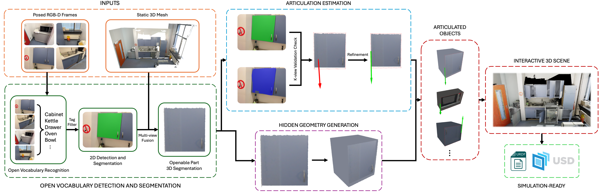
Given a static 3D scene, our method first applies open-vocabulary detection to identify openable objects and segmentation to extract their movable parts. We then estimate articulations and generate hidden geometry to obtain interactive objects. Finally, they are integrated with the static background to produce a simulation-ready interactive scene.
Predicted 2D Mask
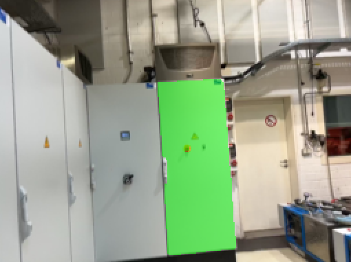
Segmented Mesh
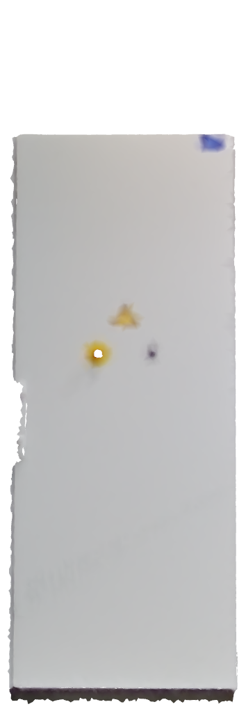
Predicted Joint
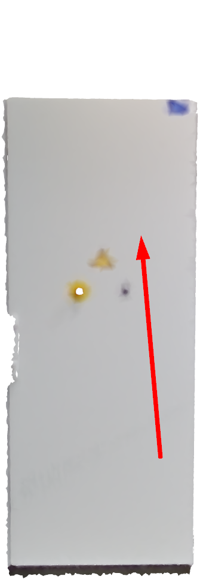
Refined Joint
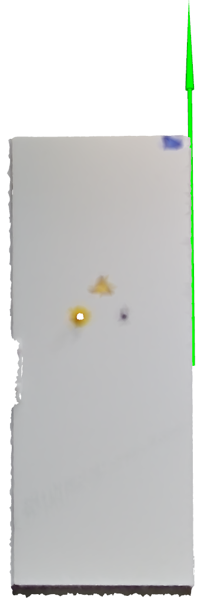
Interactive Object
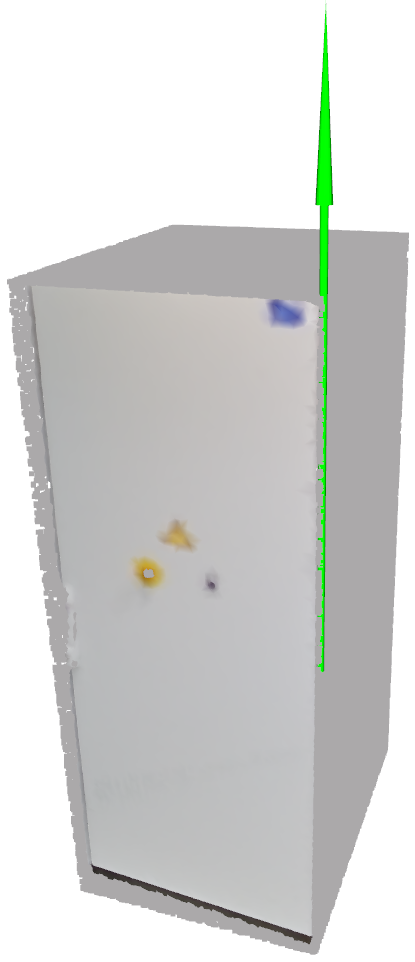
Opened Object
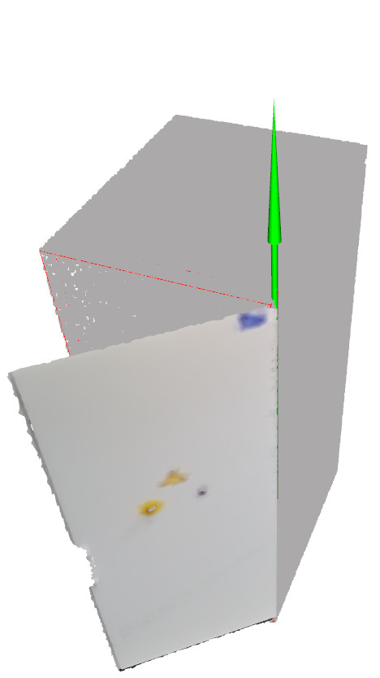
From left to right, the figure shows key intermediate results of interactive object generation. In the last column, the thin red line highlights the contour of the base part.
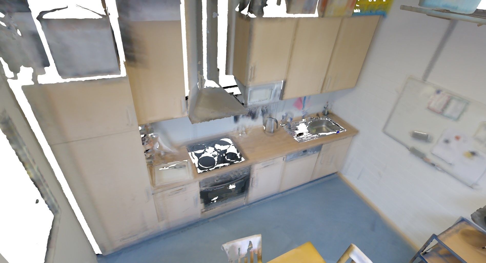
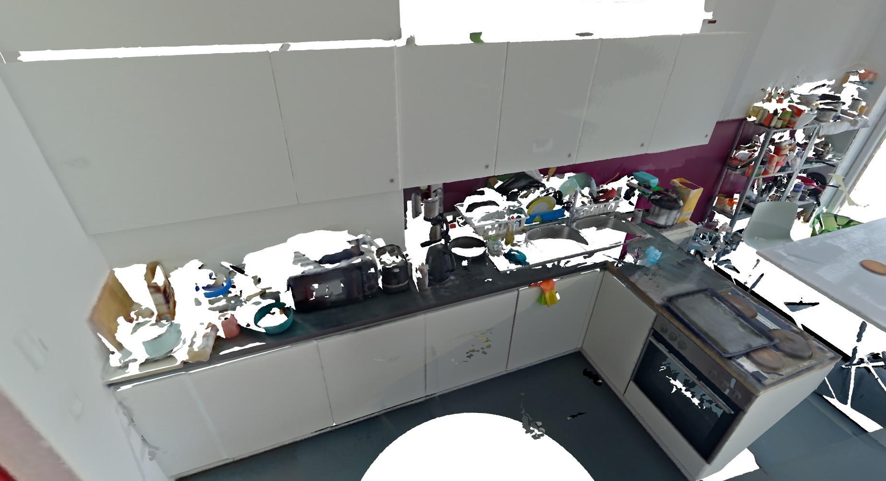
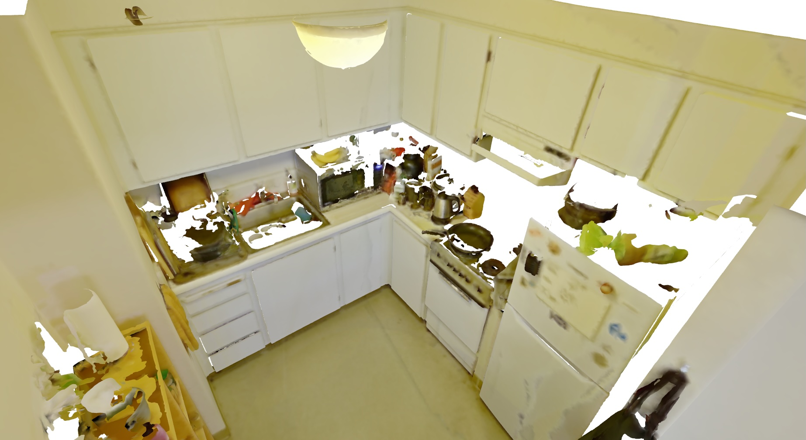
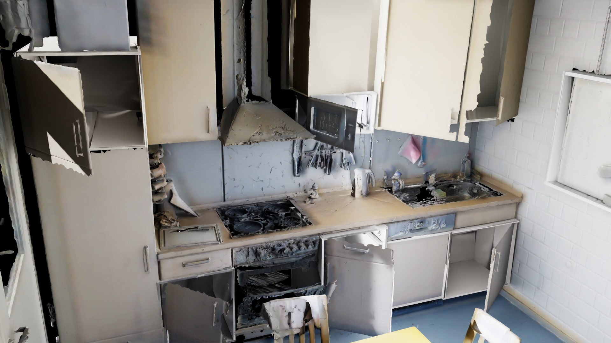
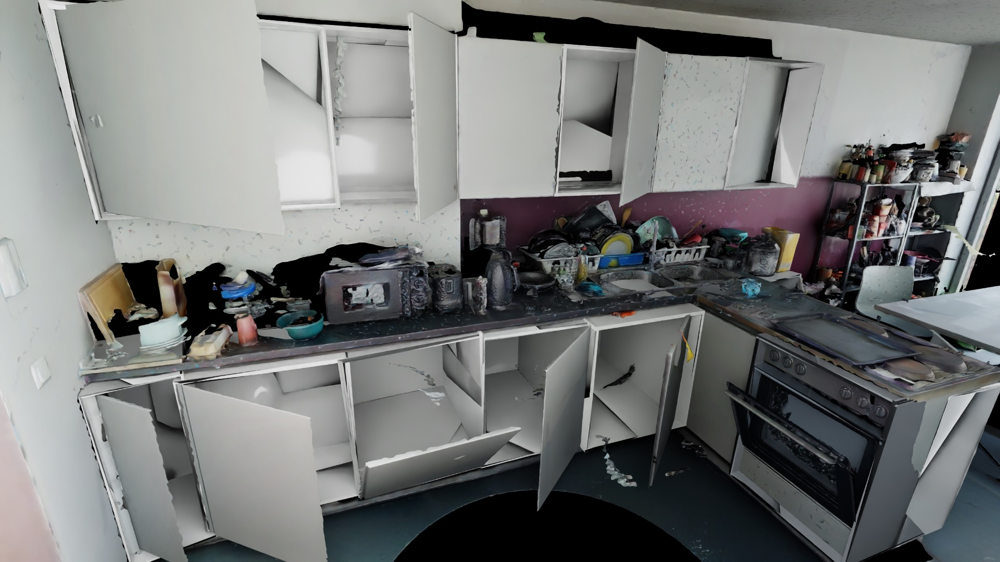
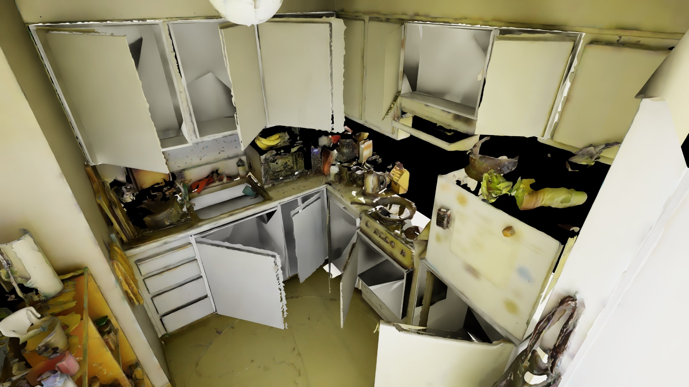
We show three example input scenes from ScanNet++ (top row) and their corresponding interactive replicas generated by REACT3D (bottom row), visualized in Isaac Sim. Our method robustly converts diverse object types, shapes, sizes, and articulation mechanisms, producing high-quality interactive scenes.
We showcase the interactive scenes generated by REACT3D in two widely used simulators, Isaac Sim and ROS. The videos demonstrate the physical interactivity of various objects. Users can manipulate each single object through GUI, highlighting the versatility and applicability of our generated scenes in different simulation environments.
Explore the generated interactive scene directly in your browser. You can rotate , zoom , and pan to observe the interactive scene generated by REACT3D.
This interactive demo is supported by Viser.
Quantitative results on openable object detection on ScanNet++. Openable object detection on 30 ScanNet++ scenes rich in openable objects. We report Precision, Recall, and F1 at IoU thresholds τ∈{0.25, 0.50}. *For URDFormer, τ denotes the coverage ratio, while for other methods it denotes IoU. †For URDFormer, the number reflects only openable objects visible in the selected region with the highest density of openable objects, since the method takes a single RGB image as input. ‡denotes the use of ground-truth mesh as input and the Gemini 2.5 model for detection. Best, second-best, and third-best results are highlighted.
| Method | #Openable Objects |
τ*=0.25 | τ*=0.50 | ||||
|---|---|---|---|---|---|---|---|
| Precision↑ | Recall↑ | F1 Score↑ | Precision↑ | Recall↑ | F1 Score↑ | ||
| URDFormer | 226† | 0.429 | 0.226 | 0.296 | 0.361 | 0.190 | 0.249 |
| DRAWER (GT-mesh 2.5‡) | 540 | 0.434 | 0.141 | 0.213 | 0.326 | 0.106 | 0.159 |
| REACT3D (Ours) | 540 | 0.731 | 0.393 | 0.511 | 0.666 | 0.357 | 0.465 |
Quantitative results of articulation estimation and MOD evaluation on ScanNet++. Articulation evaluation on the same 30 scenes from ScanNet++. Joint type accuracy is computed over correctly detected movable parts (+M / PDet), while minimum distance (MD) and orientation error (OE) are reported only for parts with correctly predicted joint types. Results are broken down by joint types: Prismatic, Revolute Vertical (Vert.), and Revolute Horizontal (Hor.). *†‡Conditions are the same as in our initial evaluation. Best, second-best, and third-best results are highlighted.
| Method | #Openable Objects |
τ*=0.25 | τ*=0.50 | ||||||||||||
|---|---|---|---|---|---|---|---|---|---|---|---|---|---|---|---|
| Articulation | MOD [%]↑ | Articulation | MOD [%]↑ | ||||||||||||
| Joint Acc. [%]↑ | MD [m]↓ | OE [°]↓ | PDet | +M | +MO | +MOD | Joint Acc. [%]↑ | MD [m]↓ | OE [°]↓ | PDet | +M | +MO | +MOD | ||
| URDFormer | 226† | 51.0 | 0.583 | 0.50 | 22.6 | 11.5 | 11.5 | 2.2 | 46.5 | 0.491 | 0.61 | 19.0 | 8.8 | 8.8 | 3.1 |
| Prismatic | 63 | -- | -- | 2.05 | 9.5 | 1.6 | 1.6 | 1.6 | -- | -- | 1.95 | 12.7 | 1.6 | 1.6 | 1.6 |
| Revolute (Vert.) | 159 | -- | 0.548 | 0.34 | 25.8 | 14.5 | 14.5 | 3.1 | -- | 0.493 | 0.40 | 20.1 | 11.3 | 11.3 | 4.4 |
| Revolute (Hor.) | 4 | -- | 0.452 | 3.06 | 50.0 | 25.0 | 25.0 | 0.0 | -- | 0.452 | 3.06 | 50.0 | 25.0 | 25.0 | 0.0 |
| DRAWER (GT-mesh 2.5‡) | 540 | 73.7 | 0.288 | 1.62 | 14.1 | 10.4 | 10.0 | 5.2 | 78.9 | 0.313 | 1.71 | 10.6 | 8.3 | 8.0 | 3.7 |
| Prismatic | 136 | -- | -- | -- | 12.5 | 0.0 | 0.0 | 0.0 | -- | -- | -- | 7.4 | 0.0 | 0.0 | 0.0 |
| Revolute (Vert.) | 386 | -- | 0.288 | 1.62 | 14.5 | 14.5 | 14.0 | 7.3 | -- | 0.313 | 1.71 | 11.7 | 11.7 | 11.1 | 5.2 |
| Revolute (Hor.) | 18 | -- | -- | -- | 16.7 | 0.0 | 0.0 | 0.0 | -- | -- | -- | 11.1 | 0.0 | 0.0 | 0.0 |
| REACT3D (Ours) | 540 | 91.5 | 0.203 | 1.16 | 39.3 | 35.9 | 35.9 | 25.2 | 92.2 | 0.180 | 1.13 | 35.7 | 33.0 | 33.0 | 23.9 |
| Prismatic | 136 | -- | -- | 1.89 | 8.8 | 8.1 | 8.1 | 8.1 | -- | -- | 1.89 | 8.8 | 8.1 | 8.1 | 8.1 |
| Revolute (Vert.) | 386 | -- | 0.202 | 1.10 | 49.5 | 46.9 | 46.9 | 35.0 | -- | 0.180 | 1.08 | 45.6 | 43.3 | 43.3 | 33.4 |
| Revolute (Hor.) | 18 | -- | 0.316 | 2.39 | 50.0 | 11.1 | 11.1 | 5.6 | -- | -- | -- | 27.8 | 0.0 | 0.0 | 0.0 |
This work was supported by the Swiss National Science Foundation Advanced Grant 216260: "Beyond Frozen Worlds: Capturing Functional 3D Digital Twins from the Real World". Alexandros Delitzas is supported by the Max Planck ETH Center for Learning Systems (CLS).
@ARTICLE{11434845,
author={Huang, Zhao and Sun, Boyang and Delitzas, Alexandros and Chen, Jiaqi and Pollefeys, Marc},
journal={IEEE Robotics and Automation Letters},
title={REACT3D: Recovering Articulations for Interactive Physical 3D Scenes},
year={2026},
volume={11},
number={5},
pages={5954-5961},
keywords={Three-dimensional displays;Joints;Geometry;Image reconstruction;Estimation;Solid modeling;Point cloud compression;Foundation models;Biological system modeling;Accuracy;Semantic scene understanding;object detection;segmentation and categorization;RGB-D perception},
doi={10.1109/LRA.2026.3674028}
}